Autoria/composição programática no Aseprite sobre arte herdada. 00 e 13: arma montada somente para diagnóstico, sem alteração do intervalo de produção.
Quadro 00
00 body-only: composto/exportado por Lua no Aseprite; corpo herdado sem retoque.00 weapon-only: composto/exportado por Lua no Aseprite; corpo herdado sem retoque.00 composite: composto/exportado por Lua no Aseprite; corpo herdado sem retoque.
body-only: mão/punho, recorte por script em 8×; pixels da composição Aseprite.weapon-only: mão/punho, recorte por script em 8×; pixels da composição Aseprite.
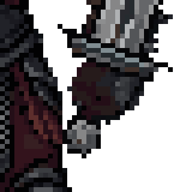
composite: mão/punho, recorte por script em 8×; pixels da composição Aseprite.
Quadro 05
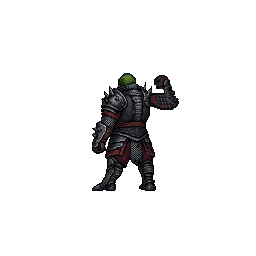
05 body-only: composto/exportado por Lua no Aseprite; corpo herdado sem retoque.
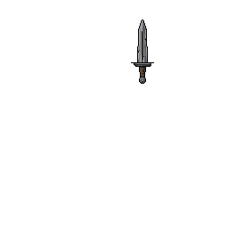
05 weapon-only: composto/exportado por Lua no Aseprite; corpo herdado sem retoque.
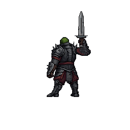
05 composite: composto/exportado por Lua no Aseprite; corpo herdado sem retoque.
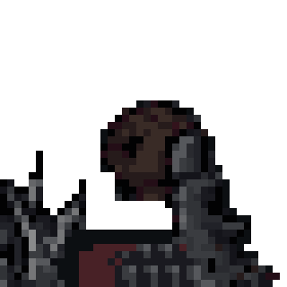
body-only: mão/punho, recorte por script em 8×; pixels da composição Aseprite.
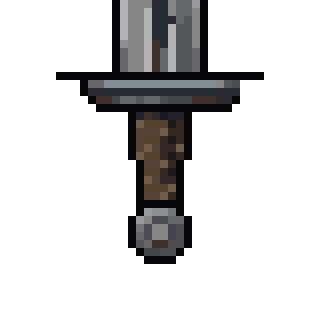
weapon-only: mão/punho, recorte por script em 8×; pixels da composição Aseprite.
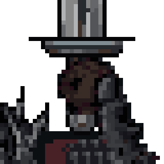
composite: mão/punho, recorte por script em 8×; pixels da composição Aseprite.
Quadro 08
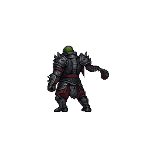
08 body-only: composto/exportado por Lua no Aseprite; corpo herdado sem retoque.
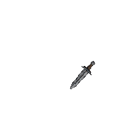
08 weapon-only: composto/exportado por Lua no Aseprite; corpo herdado sem retoque.
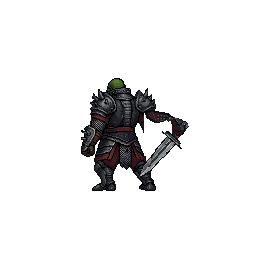
08 composite: composto/exportado por Lua no Aseprite; corpo herdado sem retoque.
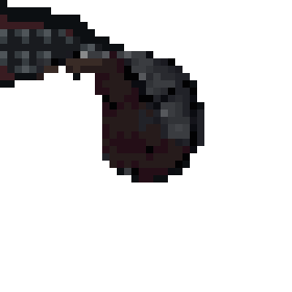
body-only: mão/punho, recorte por script em 8×; pixels da composição Aseprite.
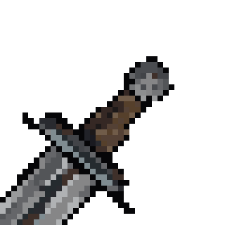
weapon-only: mão/punho, recorte por script em 8×; pixels da composição Aseprite.
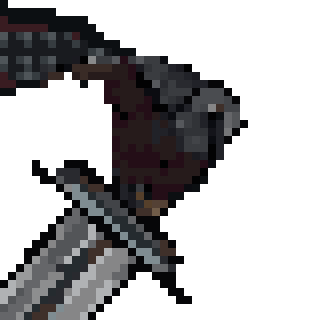
composite: mão/punho, recorte por script em 8×; pixels da composição Aseprite.
Quadro 09
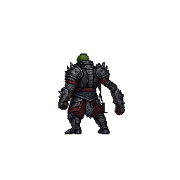
09 body-only: composto/exportado por Lua no Aseprite; corpo herdado sem retoque.
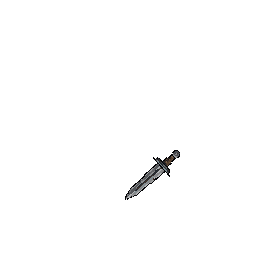
09 weapon-only: composto/exportado por Lua no Aseprite; corpo herdado sem retoque.
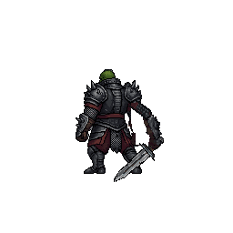
09 composite: composto/exportado por Lua no Aseprite; corpo herdado sem retoque.
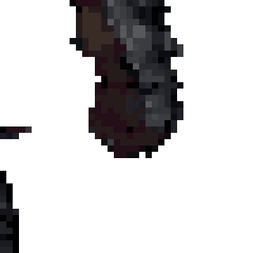
body-only: mão/punho, recorte por script em 8×; pixels da composição Aseprite.
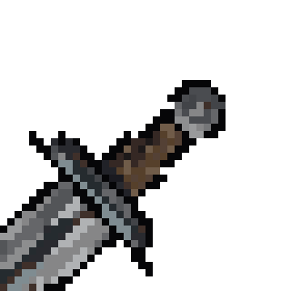
weapon-only: mão/punho, recorte por script em 8×; pixels da composição Aseprite.
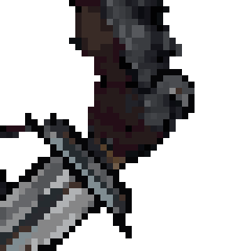
composite: mão/punho, recorte por script em 8×; pixels da composição Aseprite.
Quadro 13
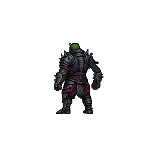
13 body-only: composto/exportado por Lua no Aseprite; corpo herdado sem retoque.
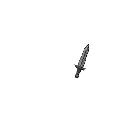
13 weapon-only: composto/exportado por Lua no Aseprite; corpo herdado sem retoque.
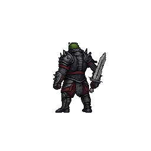
13 composite: composto/exportado por Lua no Aseprite; corpo herdado sem retoque.
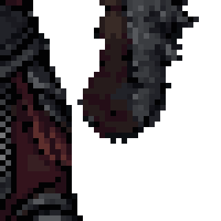
body-only: mão/punho, recorte por script em 8×; pixels da composição Aseprite.
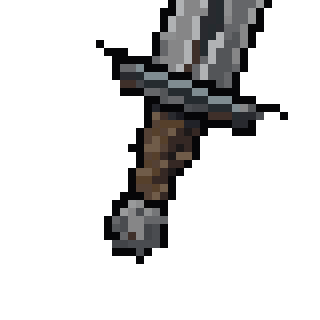
weapon-only: mão/punho, recorte por script em 8×; pixels da composição Aseprite.composite: mão/punho, recorte por script em 8×; pixels da composição Aseprite.